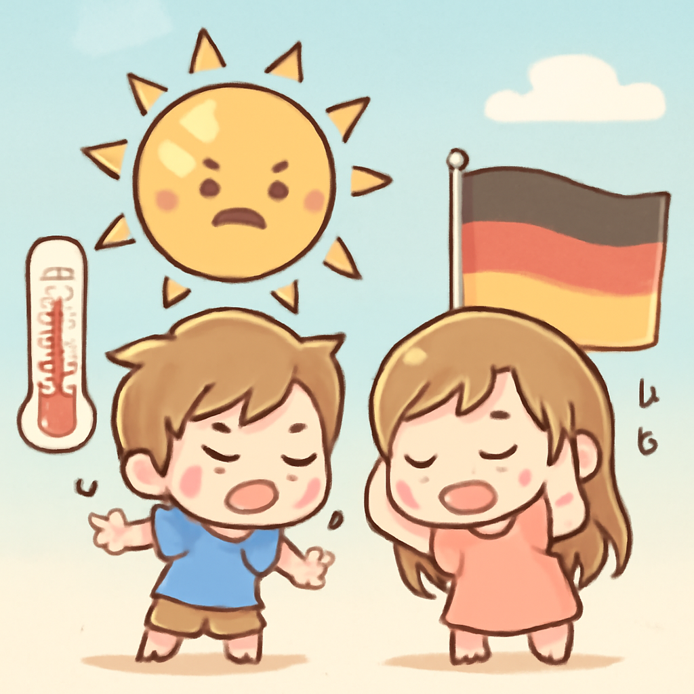

其一 · 委內瑞拉 · 地震造成920人遇難
委內瑞拉地震造成920人喪生，國際救援隊抵達
在委內瑞拉，最近發生的強震造成至少920人遇難，許多人仍被困在廢墟中。國際救援隊陸續抵達，幫助搜尋失蹤者。這次災難讓人們再次意識到自然災害的破壞力，令人心痛的故事不斷傳出。希望受災家庭能早日重建家園。
🔗 原始新聞 ↗
2026-06-27 · 以古觀今，以笑抗愁
委內瑞拉地震造成920人喪生，國際救援隊抵達
在委內瑞拉，最近發生的強震造成至少920人遇難，許多人仍被困在廢墟中。國際救援隊陸續抵達，幫助搜尋失蹤者。這次災難讓人們再次意識到自然災害的破壞力，令人心痛的故事不斷傳出。希望受災家庭能早日重建家園。
🔗 原始新聞 ↗
美國因攻擊貨船對伊朗進行報復性空襲
美國中央司令部在伊朗攻擊一艘貨船後，對該國的導彈和無人機儲存設施發動空襲。這一事件讓美伊緊張關係再度升溫，局勢堪憂。看來，這場地緣政治的棋局越來越像是在玩「生死圍棋」。
🔗 原始新聞 ↗
德國氣溫創新高，公共活動遭中止

德國最近遭遇極端熱浪，氣溫高達41.3°C，這讓不少人想念空調的涼爽。隨著高溫影響日常生活，當地政府不得不暫停一些公共活動。這不僅是氣候危機的警鐘，也讓人懷疑是不是該開始考慮在夏天回到冰箱裡避暑了。
🔗 原始新聞 ↗
烏克蘭高官因為為俄羅斯間諜被判終身監禁
一名高級烏克蘭情報官因為向俄羅斯泄露國家機密而被判終身監禁。這起事件讓人對國家的安全性產生了質疑，顯示出在戰爭中，內部的背叛同樣危險。看來，間諜遊戲可不是你我能隨便玩得起的。
🔗 原始新聞 ↗
剛果民主共和國控告盧旺達違反國際法
剛果民主共和國向國際法院控告盧旺達，指責其自1994年盧旺達大屠殺以來持續的侵略行為。這一舉動不僅是對歷史的反思，也可能改變兩國的外交關係。希望此舉能促進和平，讓「打打鬧鬧」的歷史能有個結束。
🔗 原始新聞 ↗